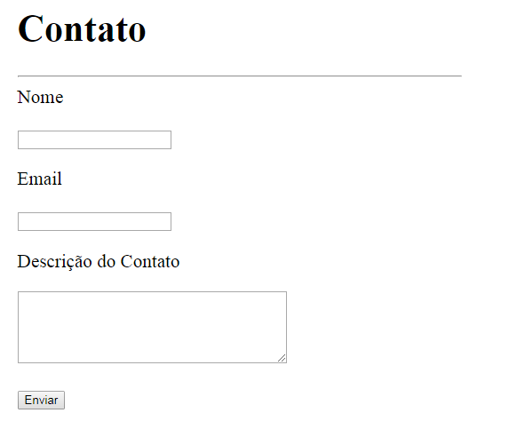

Introdução
Você já parou para pensar se as suas aplicações WEB tem algum tipo de sergurança contra ataques de usuários mal-intencionados. Se você não sabe por onde começar, já entraremos no assunto, e você protegerá suas aplicações contra as diversas vulnerabilidades que um aplicação pode ter.
Saiba de antemão que nada é 100% seguro na WEB, mas não se desespere, faça o máximo e estude de diversas fontes como se proteger.
As aplicações WEB, diferentemente de uma aplicação desktop pode ter uma visita inesperada que bagunça a casa e vai embora. Basicamente, as aplicações WEB precisam fortemente da implementação de meios combatentes de vulnerabilidades.
Conforme introduzido, você conhece a primeira vulnerabilidade que seu Website pode não estar preparado para enfrentar.
XSS
Antes de comerçamos a falar sobre XSS ou também conhecido como CROSS-SITE-SCRIPTING, vou te fazer uma pergunta. Sua aplicação possui algum formulário de contato, quem sabe talvez, forumlário de cadastro? Responda. Ela tem não é mesmo?
Se você possui um formulário de cadastros que depois de cadastrar os dados exibe ele em outro lugar, servirá de exemplo.
Colocorei links relativo aos temas abordados mas em relação aos exemplos desse exposto sobre segurança, será realizado na linguagem PHP.
if($a == $b) {
echo $b;
}
Voltando ao assunto XSS, você precisa conhecer o JavaScript, linguagem muito utlizado no mundo WEB que você terá que aprender algum dia (Estou tentando também).

SQL Injection
SQL injection, um ataque bem popular a sites na internet, se não, o mais popular. Comandos SQL que você utiliza para escrever, alterar, excluir os dados dentro de formulários que podem ou não estar vulneráveis. Se uma aplicação estiver vulnerável ao SQL injection, um comando como ' drop table usuarios; causaria problemas. No singelo exemplo, supondo que exista uma tabela usuários, ela seria excluída (da para assustar, não é mesmo?). Uma das formas de se proteger é utilizar de prepared statements, declarações preparadas, que reserva espaços para cada dado que será apresentado para o comando SQL. Se você programa na linguagem PHP, pesquise por PDO, uma forma de acesso aos dados com abstração, exemplo, utilizando as mesmas funções para acessar os dados independente do banco de dados.
CSRF